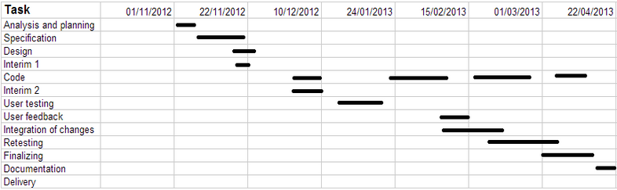

In my original plan I said that I was going to be following the cascade model, and I am fairly confident in saying that I managed to do that throughout the project. I certainly branched off to research new and interesting functionality, and then joined that in later on; as well as reverting back to previous versions.
The scheduling between Interim 1 and Interim 2 stayed pretty much as I had planned, but as soon as Interim 2 was handed in, things took a nose dive. After the initial setup of the PHP pages (a language that I was comfortable working in), and what I reaslise now, was wasting time with CSS was done, I become stuck. My original idea of what I wanted to accomplish needed a major rework, as I found that a lot of things that I thought would be easy to do, in fact....weren’t.
I spent a long period of time doing what I had convinced myself was work but in reality was just playing around with functionality that I could never implement in the time given. Instead of getting the required and main functionality completed, and then spending remaining time researching new and exciting features to implement, I did it the other way around. This meant that in the week leading up to the demonstration of my work, I was rushing around trying to get things working that should have been working since January.
A major problem I had throughout the project, was the tendency to start over. I could do a weeks worth of coding, and then decide that the way I did it wasn’t the most efficient, or perhaps required more work than I thought it would. This meant that I lost a lot of time as well as motivation, and there were often long periods of time before I pushed myself to knuckle down and work again.
Below is a gantt chart to show how things progressed. Not included in the gantt chart are times where I was learning more about the languages I used in the project, as I don’t remember when exactly I was doing that in relation to the timeline.
